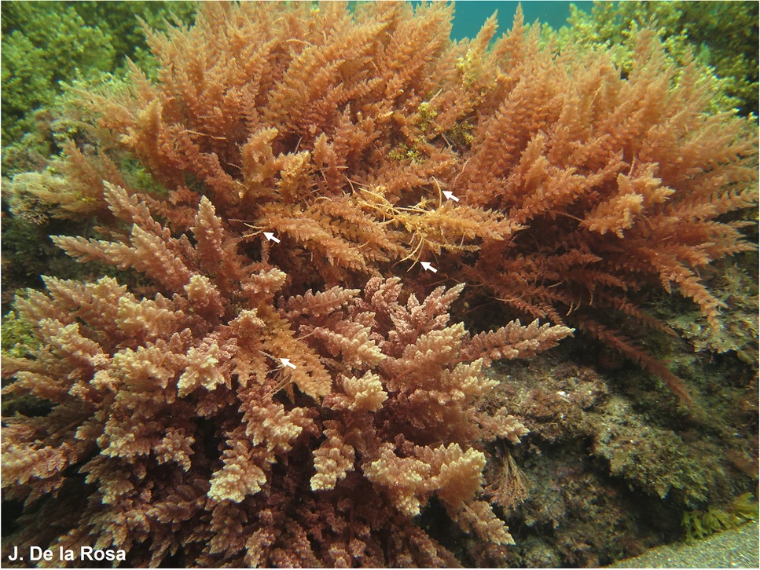
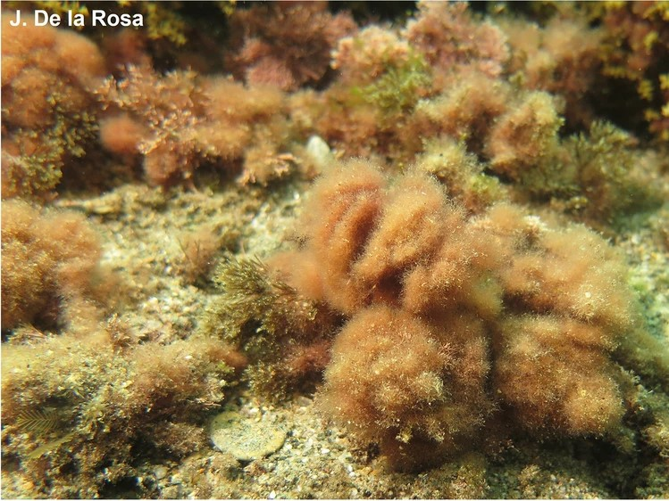
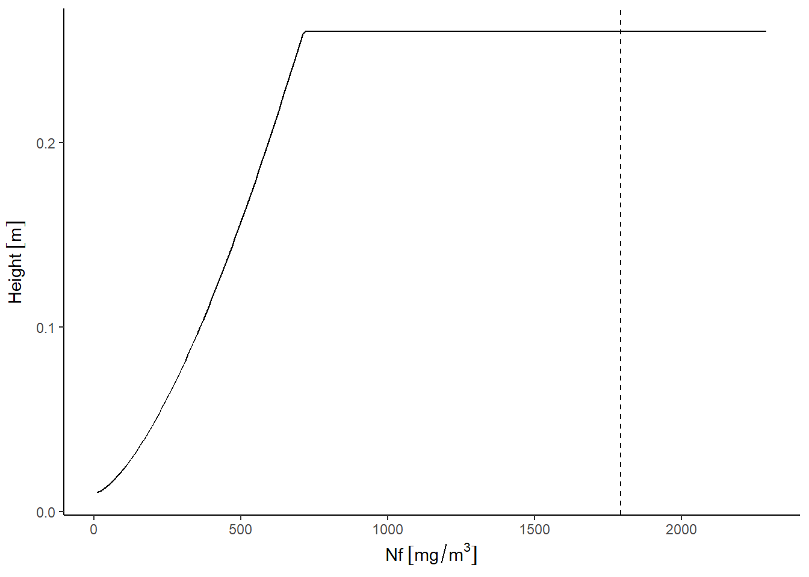
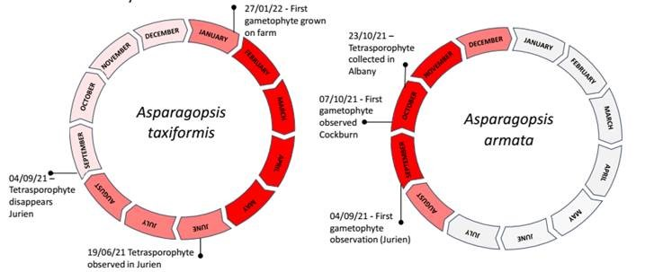

All the code in this markdown is set to ‘fold’ by default. Click each folded code chunk to see its inner workings.
# You did it!# You did it!out_path <- here() %>% file.path("data")
out_path <- here() %>% file.path("data")
prettyplot <- theme_classic() +
theme(element_text(family = "sans", size = 12, colour = "black"),
axis.title.y = element_text(vjust = 2),
legend.position = "none")
format_sci2 <- function(x) {
if (inherits(x, "units")) {format_sci(drop_units(x))} else {format_sci(x)}
}
remove_unit("gDW")
install_unit("gDW")
remove_unit("gFW")
install_unit("gFW")
remove_unit("photons")
install_unit("photons")
# This allows me to convert between moles and g of nitrogen
remove_unit("gN")
install_unit("gN")
remove_unit("molN")
install_unit("molN", "14.0067 gN")
S_uM <- set_units(seq(0, 200, 0.5), "umolN L-1")
S_mg <- set_units(S_uM, "mgN m-3")
prettyplot <- theme_classic() +
theme(element_text(family = "sans", size = 12, colour = "black"),
axis.title.y = element_text(vjust = 2),
legend.position = "none")
format_sci2 <- function(x) {
if (inherits(x, "units")) {format_sci(drop_units(x))} else {format_sci(x)}
}
remove_unit("gDW")
install_unit("gDW")
remove_unit("gFW")
install_unit("gFW")
remove_unit("photons")
install_unit("photons")
# This allows me to convert between moles and g of nitrogen
remove_unit("gN")
install_unit("gN")
remove_unit("molN")
install_unit("molN", "14.0067 gN")
S_uM <- set_units(seq(0, 200, 0.5), "umolN L-1")
S_mg <- set_units(S_uM, "mgN m-3")The Asparagopsis genus (and especially A. armata) is invasive in the northeastern Atlantic and the Mediterranean (Zanolla et al. 2022). It has been studied more as an invasive genus than a native one. There are two species (or species complexes) within the genus Asparagopsis: A. armata is a temperate species while A. taxiformis is more commonly found in tropical areas (including northern Australia), and this might affect the results of the modelling - I may need to parameterise two different species, possibly distinct only in their temperature/light tolerance.
Phylogenetic analyses suggest that there is a clade within the species A. armata restricted only to Western Australia, Tasmania and New Zealand (Dijoux, Viard, and Payri 2014). It has been proposed that the species A. armata is actually two cryptic species: A. armata 1 is native to Tasmania and is invasive in the northern hemisphere, while A. armata 2 is restricted to Western Australia, Tasmania and New Zealand (Dijoux, Viard, and Payri 2014; Zanolla et al. 2022). Therefore, while the A. armata studied as an invasive species (A. armata 1) is partially representative of the Australian species, the lack of sampling in Australia and New Zealand may be leaving knowledge gaps of the potentially more widespread A. armata 2. It’s not known how much will this affect environmental growth responses in a model, given that the genus is very plastic in its environmental tolerance (Zanolla et al. 2022).
Both species follow a triphasic lifestyle, alternative between macroscopic diploid tetrasporophyte and haploid (male and female) gametophyte phases (Figure 1). Gametophytes produce gametes for sexual reproduction while tetrasporophytes produce tetrasporangia for asexual reproduction, and both phases additionally reproduce asexually through fragmentation (Zanolla et al. 2022). The phases are easy to distinguish morphologically - gametophytes look somewhat like asparagus shoots (giving the genus name) and grow as branching shoots up to ~30 cm long. Tetrasporophytes are much smaller with finer fronds, resembling pom-poms []. Tetrasporophytes are usually found year-round, while gametophytes are often only found in colder months (Zanolla, Altamirano, De La Rosa, et al. 2018). The phases may differ in their responses to environmental temperature (particularly temperature and light) and knowing the phases is important because some studies do not specify which phase of Asparagopsis they have collected or are working with.


The different forms may also be very physiologically different in some respects - at the very least with regard to temperature and daylength. Catriona Hurd also thinks it’s likely they’ll be different in their uptake rates of the different forms of nitrogen.
It’s possible that the gametophyte and tetrasporophyte will have different uptake rates of ammonium and nitrate, and in the wild they do not appear to be affected by fluctuations in nutrients Zanolla, Altamirano, Carmona, et al. (2018). However, if we assume that the gametophyte has a similar preference for ammonium to the sporophyte then it’s not surprising that it would show little response to nutrients in the environment, as natural nitrogen is mostly in nitrate form with ammonium only being present at constant low levels generally.
As far as I can tell, no-one has investigated nitrogen uptake directly in Asparagopsis gametophytes. I will therefore be using the uptake rates calculated for the tetrasporophyte.
Some very interesting things from reading Torres et al. (2021):
Torres et al. (2021) tested the surge and internally-controlled nitrogen uptake rates of A. armata when given nitrogen in the form of ammonium, nitrate and a mix of amino acids (dominated by alanine). Nitrogen uptake (in all three forms) did not saturate at ~200 \(\mu\)M concentration, so was was better described with a linear equation rather than with Michaelis-Menton uptake kinetics
remove_unit("molN") # Torres 2021 only used N-15 so need to readjust the units for this data
install_unit("molN", "15 gN")
torresNO3 <- read.csv(file.path("data_raw", "sources", "torres_2021", "tores-2021-Fig2-B.csv")) %>%
mutate(uptake = uptake %>% set_units("umolN gDW-1 h-1"),
S = S %>% set_units("umolN L-1"))
ggplot(torresNO3, aes(x = S, y = uptake, colour = treatment)) +
geom_point()remove_unit("molN") # Torres 2021 only used N-15 so need to readjust the units for this data
install_unit("molN", "15 gN")
torresNO3 <- read.csv(file.path("data_raw", "sources", "torres_2021", "tores-2021-Fig2-B.csv")) %>%
mutate(uptake = uptake %>% set_units("umolN gDW-1 h-1"),
S = S %>% set_units("umolN L-1"))
ggplot(torresNO3, aes(x = S, y = uptake, colour = treatment)) +
geom_point()
lm <- lm(uptake ~ S, data = filter(torresNO3, treatment == "alone"))
C_ni_alone <- coef(lm)["(Intercept)"] %>% unname() %>% set_units("umolN gDW-1 h-1")
M_ni_alone <- coef(lm)["S"] %>% unname() %>% set_units("L h-1 gDW-1")
lm <- lm(uptake ~ S, data = filter(torresNO3, treatment != "alone"))
C_ni_combo <- coef(lm)["(Intercept)"] %>% unname() %>% set_units("umolN gDW-1 h-1")
M_ni_combo <- coef(lm)["S"] %>% unname() %>% set_units("L h-1 gDW-1")Torres et al. (2021) did not calculate a linear uptake rate for nitrate when it was tested alone - only a constant rate of 3.2 (or 1.08). In combination nitrate was also taken up at a com They did not offer an explanation beyond the observation that since A. armata did not show an increase in uptake rate with concentration it likely has a limited capacity to use nitrogen. However this does not explain why they provided a slope and constant for linear uptake of nitrate in combination with other N forms, as that also did not show an increase in uptake rate with increasing concentration (although the relationship was not significant). I have decided to use a constant rate of nitrate uptake independent of concentration.
lm <- lm(uptake ~ S, data = filter(torresNO3, treatment == "alone"))
C_ni_alone <- coef(lm)["(Intercept)"] %>% unname() %>% set_units("umolN gDW-1 h-1")
M_ni_alone <- coef(lm)["S"] %>% unname() %>% set_units("L h-1 gDW-1")
lm <- lm(uptake ~ S, data = filter(torresNO3, treatment != "alone"))
C_ni_combo <- coef(lm)["(Intercept)"] %>% unname() %>% set_units("umolN gDW-1 h-1")
M_ni_combo <- coef(lm)["S"] %>% unname() %>% set_units("L h-1 gDW-1")Torres et al. (2021) did not calculate a linear uptake rate for nitrate when it was tested alone - only a constant rate of 3.2 (or 1.08). In combination nitrate was also taken up at a com They did not offer an explanation beyond the observation that since A. armata did not show an increase in uptake rate with concentration it likely has a limited capacity to use nitrogen. However this does not explain why they provided a slope and constant for linear uptake of nitrate in combination with other N forms, as that also did not show an increase in uptake rate with increasing concentration (although the relationship was not significant). I have decided to use a constant rate of nitrate uptake independent of concentration.
# From Torres et. al. 2021, Table 3
M_am_alone <- set_units(0.12, "L h-1 gDW-1")
C_am_alone <- set_units(10.45, "umolN h-1 gDW-1")
M_am_combo <- set_units(0.14, "L h-1 gDW-1")
C_am_combo <- set_units(8.79, "umolN h-1 gDW-1 ")
M_aa_alone <- set_units(0.007, "L h-1 gDW-1")
C_aa_alone <- set_units(1.69, "umolN h-1 gDW-1 ")
M_aa_combo <- set_units(0.006, "L h-1 gDW-1")
C_aa_combo <- set_units(0.88, "umolN h-1 gDW-1")
torres_uptake <- as.data.frame(S_uM) %>%
mutate(ammonium_alone = lin_uptake(S_uM, M_am_alone, C_am_alone),
ammonium_combo = lin_uptake(S_uM, M_am_combo, C_am_combo),
nitrate_alone = lin_uptake(S_uM, M_ni_alone, C_ni_alone),
nitrate_combo = lin_uptake(S_uM, M_ni_combo, C_ni_combo),
amacids_alone = lin_uptake(S_uM, M_aa_alone, C_aa_alone),
amacids_combo = lin_uptake(S_uM, M_aa_combo, C_aa_combo)) %>%
pivot_longer(cols = !contains("S_uM"),
names_to = c("form", "treatment"), names_sep = "_",
values_to = "uptake",
names_transform = list(form = as.factor, treatment = as.factor)) %>%
mutate(S = set_units(S_uM, "mgN m-3"),
uptake = set_units(uptake, "mgN gDW-1 d-1"))# From Torres et. al. 2021, Table 3
M_am_alone <- set_units(0.12, "L h-1 gDW-1")
C_am_alone <- set_units(10.45, "umolN h-1 gDW-1")
M_am_combo <- set_units(0.14, "L h-1 gDW-1")
C_am_combo <- set_units(8.79, "umolN h-1 gDW-1 ")
M_aa_alone <- set_units(0.007, "L h-1 gDW-1")
C_aa_alone <- set_units(1.69, "umolN h-1 gDW-1 ")
M_aa_combo <- set_units(0.006, "L h-1 gDW-1")
C_aa_combo <- set_units(0.88, "umolN h-1 gDW-1")
torres_uptake <- as.data.frame(S_uM) %>%
mutate(ammonium_alone = lin_uptake(S_uM, M_am_alone, C_am_alone),
ammonium_combo = lin_uptake(S_uM, M_am_combo, C_am_combo),
nitrate_alone = lin_uptake(S_uM, M_ni_alone, C_ni_alone),
nitrate_combo = lin_uptake(S_uM, M_ni_combo, C_ni_combo),
amacids_alone = lin_uptake(S_uM, M_aa_alone, C_aa_alone),
amacids_combo = lin_uptake(S_uM, M_aa_combo, C_aa_combo)) %>%
pivot_longer(cols = !contains("S_uM"),
names_to = c("form", "treatment"), names_sep = "_",
values_to = "uptake",
names_transform = list(form = as.factor, treatment = as.factor)) %>%
mutate(S = set_units(S_uM, "mgN m-3"),
uptake = set_units(uptake, "mgN gDW-1 d-1"))Ammonium is obviously the preferred form of nitrogen uptake in A. armata. Amino acids and nitrate are taken up at approximately the same rate.
int1 <- 20 %>% set_units("umolN L-1") %>% set_units("mgN m-3")
int2 <- 50 %>% set_units("umolN L-1") %>% set_units("mgN m-3")
ggplot(torres_uptake, aes(x = S, y = uptake, colour = form)) +
geom_line() +
facet_wrap(vars(treatment)) +
geom_vline(aes(xintercept = int1), linetype = "dashed") +
geom_vline(aes(xintercept = int2), linetype = "dashed") +
labs(y = "Uptake rate", x = "Substrate concentration") +
prettyplot + theme(legend.position = "bottom")int1 <- 20 %>% set_units("umolN L-1") %>% set_units("mgN m-3")
int2 <- 50 %>% set_units("umolN L-1") %>% set_units("mgN m-3")
ggplot(torres_uptake, aes(x = S, y = uptake, colour = form)) +
geom_line() +
facet_wrap(vars(treatment)) +
geom_vline(aes(xintercept = int1), linetype = "dashed") +
geom_vline(aes(xintercept = int2), linetype = "dashed") +
labs(y = "Uptake rate", x = "Substrate concentration") +
prettyplot + theme(legend.position = "bottom")
remove_unit("molN")
install_unit("molN", "15 gN")remove_unit("molN")
install_unit("molN", "15 gN")Schuenhoff, Mata, and Santos (2006) fit a Michaelis–Menten curve to their uptake rates. They measured day and night uptake rates separately and combined. Their night and combined measurements were fairly poorly described by a Michaelis–Menten curve (R = 0.189 and 0.21 respectively) but daytime uptake was better (R\(^2\) = 0.78). Since the model doesn’t have a day-night cycle anyway, I’ll be looking at the daytime parameters only.
V_am <- 14.85 %>% set_units("umolN gDW-1 h-1")
K_am <- 10.01 %>% set_units("umolN L-1")
schuen_uptake <- data.frame(S = S_uM) %>%
mutate(uptake = MM_uptake(conc = S_uM, V = V_am, K = K_am),
S = set_units(S_uM, "mgN m-3"),
uptake = set_units(uptake, "mgN gDW-1 d-1"),
form = factor("ammonium", levels = levels(torres_uptake$form)))
int1 <- 5 %>% set_units("umolN L-1") %>% set_units("mgN m-3")
int2 <- 20 %>% set_units("umolN L-1") %>% set_units("mgN m-3")
int3 <- 50 %>% set_units("umolN L-1") %>% set_units("mgN m-3")
schuen_uptake %>%
filter(S <= set_units(1000, "mgN m-3")) %>%
ggplot(aes(x = S, y = uptake, colour = form)) +
geom_line() +
geom_vline(aes(xintercept = int1), linetype = "dashed") +
geom_vline(aes(xintercept = int2), linetype = "dashed") +
geom_vline(aes(xintercept = int3), linetype = "dashed") +
labs(y = "Uptake rate", x = "Substrate concentration") +
theme_classic() + theme(legend.position = "bottom")V_am <- 14.85 %>% set_units("umolN gDW-1 h-1")
K_am <- 10.01 %>% set_units("umolN L-1")
schuen_uptake <- data.frame(S = S_uM) %>%
mutate(uptake = MM_uptake(conc = S_uM, V = V_am, K = K_am),
S = set_units(S_uM, "mgN m-3"),
uptake = set_units(uptake, "mgN gDW-1 d-1"),
form = factor("ammonium", levels = levels(torres_uptake$form)))
int1 <- 5 %>% set_units("umolN L-1") %>% set_units("mgN m-3")
int2 <- 20 %>% set_units("umolN L-1") %>% set_units("mgN m-3")
int3 <- 50 %>% set_units("umolN L-1") %>% set_units("mgN m-3")
schuen_uptake %>%
filter(S <= set_units(1000, "mgN m-3")) %>%
ggplot(aes(x = S, y = uptake, colour = form)) +
geom_line() +
geom_vline(aes(xintercept = int1), linetype = "dashed") +
geom_vline(aes(xintercept = int2), linetype = "dashed") +
geom_vline(aes(xintercept = int3), linetype = "dashed") +
labs(y = "Uptake rate", x = "Substrate concentration") +
theme_classic() + theme(legend.position = "bottom")
It’s immediately obvious that even though ammonium uptake by MM kinetics increases quickly at low concentrations, the linear uptake rate calculated by Torres et al. (2021) is higher than the MM uptake rate calculated by Schuenhoff, Mata, and Santos (2006), especially at low (5 \(\mu\)M) and very high (50 \(\mu\)M) concentrations.
both_uptake <- merge(torres_uptake, schuen_uptake, by = c("S", "form"), all = T) %>%
rename(torres = uptake.x, schuenhoff = uptake.y) %>%
pivot_longer(names_to = "source", values_to = "uptake", cols = c(torres, schuenhoff),
names_transform = list(source = as.factor))
both_uptake %>%
filter(S_uM <= set_units(55, "umolN L-1")) %>%
ggplot(aes(x = S, y = uptake, color = form, linetype = source)) +
geom_line(linewidth = 0.75) +
facet_wrap(vars(treatment)) +
geom_vline(aes(xintercept = int1), linetype = "dotted") +
geom_vline(aes(xintercept = int2), linetype = "dotted") +
geom_vline(aes(xintercept = int3), linetype = "dotted") +
labs(y = "Uptake rate", x = "Substrate concentration") +
prettyplot + theme(legend.position = "bottom")both_uptake <- merge(torres_uptake, schuen_uptake, by = c("S", "form"), all = T) %>%
rename(torres = uptake.x, schuenhoff = uptake.y) %>%
pivot_longer(names_to = "source", values_to = "uptake", cols = c(torres, schuenhoff),
names_transform = list(source = as.factor))
both_uptake %>%
filter(S_uM <= set_units(55, "umolN L-1")) %>%
ggplot(aes(x = S, y = uptake, color = form, linetype = source)) +
geom_line(linewidth = 0.75) +
facet_wrap(vars(treatment)) +
geom_vline(aes(xintercept = int1), linetype = "dotted") +
geom_vline(aes(xintercept = int2), linetype = "dotted") +
geom_vline(aes(xintercept = int3), linetype = "dotted") +
labs(y = "Uptake rate", x = "Substrate concentration") +
prettyplot + theme(legend.position = "bottom")
# Note that even through MM uptake and linear uptake of ammonium are making it into the model, only one uptake shape can be used per nitrogen form at a time and this is specified in the model run.
V_am <- V_am # From Schuenhoff
K_am <- K_am # From Schuenhoff
M_am <- M_am_combo # From Torres
C_am <- C_am_combo # From Torres
M_ni <- M_ni_combo # From Torres (constant uptake)
C_ni <- C_ni_combo # From Torres
M_ot <- M_aa_combo # From Torres
C_ot <- C_aa_combo # From Torres# Note that even through MM uptake and linear uptake of ammonium are making it into the model, only one uptake shape can be used per nitrogen form at a time and this is specified in the model run.
V_am <- V_am # From Schuenhoff
K_am <- K_am # From Schuenhoff
M_am <- M_am_combo # From Torres
C_am <- C_am_combo # From Torres
M_ni <- M_ni_combo # From Torres (constant uptake)
C_ni <- C_ni_combo # From Torres
M_ot <- M_aa_combo # From Torres
C_ot <- C_aa_combo # From TorresThe model requires minimum and maximum internal nitrogen concentrations. There are a couple of ways to go about estimating these:
Mata, Schuenhoff, and Santos (2010) reported that A. armata’s N-content was 6.04% of DW at harvesting in December, up from 5.90% at the time of stocking (or 5.56% up to 5.62% in May).
# Data from Figure 1
mata_data_Y <- read.csv(file.path("data_raw", "sources", "mata_2010", "figure_1.csv")) %>%
rename(biomass_yield = `Biomass.yield.gDW.m.2.d.1`,
TAN_flux = `Weekly.average.TAN.flux.umol.L.1.h.1`) %>%
mutate(biomass_yield = biomass_yield %>% set_units("gDW m-2 d-1"),
TAN_flux = TAN_flux %>% set_units("umolN L-1 h-1"),
species = as.factor(species),
month = as.factor(month))
# Data from Figure 2
mata_data_N <- read.csv(file.path("data_raw", "sources", "mata_2010", "figure_2.csv")) %>%
rename(biofiltration = `Biofiltration..g.N.m.2.d.1.`,
TAN_flux = `Weekly.average.TAN.flux.umol.L.1.h.1`) %>%
mutate(biofiltration = biofiltration %>% set_units("gN m-2 d-1"),
TAN_flux = TAN_flux %>% set_units("umolN L-1 h-1"),
measure = as.factor(measure),
species = as.factor(species),
month = as.factor(month)) %>%
pivot_wider(names_from = measure, values_from = biofiltration)
# Plot data just to check it matches Mata 2010 - it does
# ggplot(data = filter(mata_data_Y, species == "A. armata"),
# aes(x = TAN_flux, y = biomass_yield, colour = month)) +
# geom_point()
# ggplot(data = filter(mata_data_N, species == "A. armata"),
# aes(x = TAN_flux, y = N_yield, colour = month)) +
# geom_point() # Data from Figure 1
mata_data_Y <- read.csv(file.path("data_raw", "sources", "mata_2010", "figure_1.csv")) %>%
rename(biomass_yield = `Biomass.yield.gDW.m.2.d.1`,
TAN_flux = `Weekly.average.TAN.flux.umol.L.1.h.1`) %>%
mutate(biomass_yield = biomass_yield %>% set_units("gDW m-2 d-1"),
TAN_flux = TAN_flux %>% set_units("umolN L-1 h-1"),
species = as.factor(species),
month = as.factor(month))
# Data from Figure 2
mata_data_N <- read.csv(file.path("data_raw", "sources", "mata_2010", "figure_2.csv")) %>%
rename(biofiltration = `Biofiltration..g.N.m.2.d.1.`,
TAN_flux = `Weekly.average.TAN.flux.umol.L.1.h.1`) %>%
mutate(biofiltration = biofiltration %>% set_units("gN m-2 d-1"),
TAN_flux = TAN_flux %>% set_units("umolN L-1 h-1"),
measure = as.factor(measure),
species = as.factor(species),
month = as.factor(month)) %>%
pivot_wider(names_from = measure, values_from = biofiltration)
# Plot data just to check it matches Mata 2010 - it does
# ggplot(data = filter(mata_data_Y, species == "A. armata"),
# aes(x = TAN_flux, y = biomass_yield, colour = month)) +
# geom_point()
# ggplot(data = filter(mata_data_N, species == "A. armata"),
# aes(x = TAN_flux, y = N_yield, colour = month)) +
# geom_point() # Parameters from Figure 1 (May)
biom_Y_Vmax <- 153.6 %>% set_units("gDW m-2 d-1") # this is per m2 of a tank with SA=0.23m2
biom_Y_Ks <- 48.4 %>% set_units("umolN L-1 h-1")
biom_Y <- data.frame(flux = seq(0, 2000)) %>%
mutate(flux = flux %>% set_units("umolN L-1 h-1"),
biom_yield = MM_uptake(flux, V = biom_Y_Vmax, K = biom_Y_Ks))
# Parameters from Figure 2 (May, N-yield)
N_Y_Vmax <- 9.5 %>% set_units("gDW m-2 d-1")
N_Y_Ks <- 60.3 %>% set_units("umolN L-1 h-1")
N_Y <- data.frame(flux = seq(0, 200)) %>%
mutate(flux = flux %>% set_units("umolN L-1 h-1"),
N_yield = MM_uptake(flux, V = N_Y_Vmax, K = N_Y_Ks))
# Plot data just to check it matches Mata 2010 - it does
# ggplot(data = N_Y, aes(x = flux, y = N_yield)) +
# geom_line() + prettyplot
# ggplot(data = biom_Y, aes(x = flux, y = biom_yield)) +
# geom_line() + prettyplot
N_biom <- merge(biom_Y, N_Y, by = "flux") %>%
mutate(N_biom = N_yield/biom_yield)
# ggplot(N_biom, aes(x = biom_yield, y = N_biom)) +
# geom_point()
max_N_biom <- max(N_biom$N_biom, na.rm = T)
min_N_biom <- min(N_biom$N_biom, na.rm = T)# Parameters from Figure 1 (May)
biom_Y_Vmax <- 153.6 %>% set_units("gDW m-2 d-1") # this is per m2 of a tank with SA=0.23m2
biom_Y_Ks <- 48.4 %>% set_units("umolN L-1 h-1")
biom_Y <- data.frame(flux = seq(0, 2000)) %>%
mutate(flux = flux %>% set_units("umolN L-1 h-1"),
biom_yield = MM_uptake(flux, V = biom_Y_Vmax, K = biom_Y_Ks))
# Parameters from Figure 2 (May, N-yield)
N_Y_Vmax <- 9.5 %>% set_units("gDW m-2 d-1")
N_Y_Ks <- 60.3 %>% set_units("umolN L-1 h-1")
N_Y <- data.frame(flux = seq(0, 200)) %>%
mutate(flux = flux %>% set_units("umolN L-1 h-1"),
N_yield = MM_uptake(flux, V = N_Y_Vmax, K = N_Y_Ks))
# Plot data just to check it matches Mata 2010 - it does
# ggplot(data = N_Y, aes(x = flux, y = N_yield)) +
# geom_line() + prettyplot
# ggplot(data = biom_Y, aes(x = flux, y = biom_yield)) +
# geom_line() + prettyplot
N_biom <- merge(biom_Y, N_Y, by = "flux") %>%
mutate(N_biom = N_yield/biom_yield)
# ggplot(N_biom, aes(x = biom_yield, y = N_biom)) +
# geom_point()
max_N_biom <- max(N_biom$N_biom, na.rm = T)
min_N_biom <- min(N_biom$N_biom, na.rm = T)Mata, Schuenhoff, and Santos (2010) reported that the maximum N-content of A. armata in their study was 6.18%, and the minimum (at stocking, not starved) was 5.56% \(\pm\) 0.13%. Schuenhoff, Mata, and Santos (2006) reported a maximum N-content of 6.5% and found that the C- and N-content of their tank-grown A. armata remained consistent regardless of available TAN (TAN range 0-400 \(\mu\)mol l\(^{-1}\) h\(^{-1}\)).
Maximum (or, at least, very high) internal nitrogen concentrations for Asparagopsis are fairly easy to find. A. taxiformis had a protein content of 22.69 %DM in Nunes et al. (2024) and 23.76 %DM in Pacheco et al. (2020). Nunes et al. (2024) also found that A. armata had a protein concentration of 24.23 %DM. However, the A. taxiformis spp. gametophytes eaten in Hawaii have also been reported having protein concentrations <10 %DW (McDermid and Stuercke 2003), and all of these measurements came from the invasive range of Asparagopsis.
Samples of A. armata collected from New Zealand showed a protein concentrations ranging from of 10.94 to 15.2 %DW (Mihaila et al. 2022; Zemke-White and Clements 1999), while Australian samples of A. taxiformis had mean a protein concentration of 18.2 %DW (Brooke et al. 2020).
P_range_taxi <- sort(c(22.69, 23.76, 18.2, 7.5)) # Asparagopsis taxiformis
P_range_arma <- sort(c(24.23, 15.2, 10.94)) # Asparagopsis armata
N_conv_aspara <- 5.63
N_range_taxi_aspara <- P_range_taxi/N_conv_aspara # Asparagopsis taxiformis
N_range_arma_aspara <- P_range_arma/N_conv_aspara # Asparagopsis armata
N_conv_reds <- 5.1
N_range_taxi_reds <- P_range_taxi/N_conv_reds # Asparagopsis taxiformis
N_range_arma_reds <- P_range_arma/N_conv_reds # Asparagopsis armataP_range_taxi <- sort(c(22.69, 23.76, 18.2, 7.5)) # Asparagopsis taxiformis
P_range_arma <- sort(c(24.23, 15.2, 10.94)) # Asparagopsis armata
N_conv_aspara <- 5.63
N_range_taxi_aspara <- P_range_taxi/N_conv_aspara # Asparagopsis taxiformis
N_range_arma_aspara <- P_range_arma/N_conv_aspara # Asparagopsis armata
N_conv_reds <- 5.1
N_range_taxi_reds <- P_range_taxi/N_conv_reds # Asparagopsis taxiformis
N_range_arma_reds <- P_range_arma/N_conv_reds # Asparagopsis armataThere are two observations made from this. First, A. armata appears to have a slightly higher average protein concentration than A. taxiformis, although this might be due to small sample sizes and a lack of direct comparison. Second, the samples collected from Australia and New Zealand had a much lower protein concentration than those collected elsewhere (Nunes et al. 2024; Mihaila et al. 2022), possibly reflecting the region’s naturally low nitrogen levels. Luckily, these results can still be useful as there appear to be no significant differences between the protein content of cultured and wild macroalgae, so intra-species variation is probably the largest factor determining the protein content of most macroalgae (Angell et al. 2016).
There are also different possible ways of converting protein to nitrogen: Angell et al. (2016) suggested that a factor 5.1 is most appropriate for red algae, although they also reported Asparagopsis specifically having a conversion factor of 5.63 which was used by Mihaila et al. (2022) in their calculations. The results of these conversions are summarised in Table 1.
| Species | Stat | Protein % | N (reds) | N (Asparagopsis) |
|---|---|---|---|---|
| Mean | 16.79 | 3.29 | 2.98 | |
| A. armata | Min | 10.94 | 2.15 | 1.94 |
| Max | 24.23 | 4.75 | 4.3 | |
| Mean | 18.04 | 3.54 | 3.29 | |
| A. taxiformis | Min | 7.5 | 1.47 | 2.15 |
| Max | 23.76 | 4.66 | 4.75 |
N_min <- set_units(min(P_range_arma/100)/N_conv_aspara, "gN gDW-1")
Q_min <- set_units(N_min, "mgN gDW-1")
N_max <- set_units(0.065, "gN gDW-1") # Schuenhoff 2006
Q_max <- set_units(N_max, "mgN gDW-1")N_min <- set_units(min(P_range_arma/100)/N_conv_aspara, "gN gDW-1")
Q_min <- set_units(N_min, "mgN gDW-1")
N_max <- set_units(0.065, "gN gDW-1") # Schuenhoff 2006
Q_max <- set_units(N_max, "mgN gDW-1")This gives a minimum N of 1.94% (a \(Q_{min}\) of 19.43 mg gDW\(^{-1}\)) and a maximum N-content of 6.5% (a \(Q_{max}\) of 65 mg gDW\(^{-1}\)), which is a relatively high value for macroalgae.
This gives a minimum N of 1.94% (a \(Q_{min}\) of 19.43 mg gDW\(^{-1}\)) and a maximum N-content of 6.5% (a \(Q_{max}\) of 65 mg gDW\(^{-1}\)), which is a relatively high value for macroalgae.
# schuenhoff_tetrasporophyte_2006
remove_unit("gWW")
install_unit("gWW", "0.25 gDW")
DWWW_schuen <- set_units(1, "gDW") %>% set_units("gWW")
# sainz-villegas_exploring_2024
remove_unit("gWW")
install_unit("gWW", "0.12 gDW")
DWWW_sainz <- set_units(1, "gDW") %>% set_units("gWW")
# nunes_evaluation_2024/roque_effect_2019
remove_unit("gWW")
install_unit("gWW", "0.1302083 gDW") # 1/7.68
DWWW_nunes_arma <- set_units(1, "gDW") %>% set_units("gWW")
remove_unit("gWW")
install_unit("gWW", "0.1526718 gDW") # 1/6.55
DWWW_nunes_taxi <- set_units(1, "gDW") %>% set_units("gWW")These options give DW:WW values of 4, 8.33, or 7.68 for A. armata and 6.55 (A. taxiformis). However, only Nunes et al. (2024) specifically looked at the gametophyte.
DWWW <- mean(c(DWWW_nunes_arma, DWWW_nunes_taxi))DWWW <- mean(c(DWWW_nunes_arma, DWWW_nunes_taxi))Within the model, “height” does not indicate height exactly, rather it indicates how much of the available space is being taken up by the macroalgae. This combines with density (mg m\(^{-3}\), i.e. growth) to indicate how much light and nutrients the macroalgae has access to. For example:
Zanolla, Altamirano, De La Rosa, et al. (2018) reported that A, taxiformis gametophyte branches had a maximum length of ~26 cm at ~115 g DW m\(^{-2}\).
sizedis <- set_units(115,"gDW m-2")*set_units(0.26,"m-1")
sizedisN <- set_units(drop_units(sizedis*0.06), "g m-3")
sizedisN <- set_units(sizedisN, "mg m-3")
sizedis2 <- set_units(115,"gDW m-2")*set_units(0.26,"m-1")
sizedisN2 <- set_units(drop_units(sizedis2*0.06), "g m-3")
sizedisN2 <- set_units(sizedisN2, "mg m-3")/10This is equivalent to approximately 29.9 g DW m\(^{-3}\) for a single plant to reach maximum height, or about 1794 g N mg\(^{-3}\). Zanolla, Altamirano, De La Rosa, et al. (2018) found that smaller size classes were more abundant than higher classes, indicating that the gametophyte prioritises new shoots (lateral growth) over increasing height (vertical growth). If we assume that 5 plants are growing within 1 m\(^{-3}\), then the maximum height will be reached much earlier, at 179.4 g N mg\(^{-3}\).
Zanolla, Altamirano, De La Rosa, et al. (2018) reported that A, taxiformis gametophyte branches had a maximum length of ~26 cm at ~115 g DW m\(^{-2}\).
sizedis <- set_units(115,"gDW m-2")*set_units(0.26,"m-1")
sizedisN <- set_units(drop_units(sizedis*0.06), "g m-3")
sizedisN <- set_units(sizedisN, "mg m-3")
sizedis2 <- set_units(115,"gDW m-2")*set_units(0.26,"m-1")
sizedisN2 <- set_units(drop_units(sizedis2*0.06), "g m-3")
sizedisN2 <- set_units(sizedisN2, "mg m-3")/10This is equivalent to approximately 29.9 g DW m\(^{-3}\) for a single plant to reach maximum height, or about 1794 g N mg\(^{-3}\). Zanolla, Altamirano, De La Rosa, et al. (2018) found that smaller size classes were more abundant than higher classes, indicating that the gametophyte prioritises new shoots (lateral growth) over increasing height (vertical growth). If we assume that 5 plants are growing within 1 m\(^{-3}\), then the maximum height will be reached much earlier, at 179.4 g N mg\(^{-3}\).
h_a <- drop_units(sizedisN)
h_b <- 1.5
h_c <- 0.01
h_max <- 0.26 %>% set_units("m")
dens <- seq(10, drop_units(sizedisN)+500, 10)
h <- sapply(X = dens, FUN = height, spec_params = c(h_a = h_a, h_b = h_b, h_c = h_c, h_max = drop_units(h_max)))
height <- data.frame(dens = set_units(dens, "mg m-3"), h = set_units(h, "m"))
ggplot(height) +
geom_line(aes(x = dens, y = h)) +
geom_vline(xintercept = sizedisN, linetype = "dashed") +
prettyplot +
labs(x = "Nf", y = "Height")
Zanolla, Altamirano, De La Rosa, et al. (2018)? Wright et al. (2022)?
Zanolla, Altamirano, De La Rosa, et al. (2018)? Wright et al. (2022)?
Schuenhoff, Mata, and Santos (2006) investigated the optimal stocking density for A. armata in spring and winter at a high water exchange rate (2 Vol hr\(^{-1}\)). Yield was determined via:
\[ Y(g DW m^{−2} week^{−1}) = \frac{N_t (g FW) − N_0 (g FW)}{t (weeks) \times DW:FW \times Area (m^{2})} \]
The area of each tank was 0.23 m\(^{-2}\) (with a depth of 0.48 m).
Maximum yields in Schuenhoff, Mata, and Santos (2006) in both seasons was achieved at a stocking density of 5 g FW l\(^{-1}\), but the yield in spring was higher than in winter (~700 vs ~520 g DW m\(^{-2}\) week\(^{-1}\)). These can be converted to mg N m\(^{-2}\) d\(^{-1}\):
# schuenhoff_tetrasporophyte_2006 dry to wet conversion
remove_unit("gWW")
install_unit("gWW", "0.25 gDW")
spring <- read.csv(file.path("data_raw", "sources", "schuenhoff_2006", "schuenhoff_2006_Fig1_spring-data.csv"), header = F) %>%
mutate(season = "spring")
winter <- read.csv(file.path("data_raw", "sources", "schuenhoff_2006", "schuenhoff_2006_Fig1_winter-data.csv"), header = F) %>%
mutate(season = "winter")
N_perc <- set_units(0.065, "gN gDW-1")
C_perc <- set_units(0.355, "gN gDW-1") # C:N ratio (or C% of tissue) is not currently used within the model but might be useful later
# initial starting value
stock_dens <- set_units(5, "gWW L-1") %>% set_units("gDW m-3")
stock_dens <- (stock_dens*N_perc) %>% set_units("mgN m-3")
yield_spring <- set_units(700, "gDW m-2 week-1")
yield_spring <- yield_spring/set_units(0.48, "m")
yield_spring <- set_units(yield_spring*N_perc, "mgN m-3 d-1")
yield_winter <- set_units(520, "gDW m-2 week-1")
yield_winter <- yield_winter/set_units(0.48, "m")
yield_winter <- set_units(yield_winter*N_perc, "mgN m-3 d-1")
max_growth <- c(spring = yield_spring/stock_dens, winter = yield_winter/stock_dens)
mu <- max(max_growth)# schuenhoff_tetrasporophyte_2006 dry to wet conversion
remove_unit("gWW")
install_unit("gWW", "0.25 gDW")
spring <- read.csv(file.path("data_raw", "sources", "schuenhoff_2006", "schuenhoff_2006_Fig1_spring-data.csv"), header = F) %>%
mutate(season = "spring")
winter <- read.csv(file.path("data_raw", "sources", "schuenhoff_2006", "schuenhoff_2006_Fig1_winter-data.csv"), header = F) %>%
mutate(season = "winter")
N_perc <- set_units(0.065, "gN gDW-1")
C_perc <- set_units(0.355, "gN gDW-1") # C:N ratio (or C% of tissue) is not currently used within the model but might be useful later
# initial starting value
stock_dens <- set_units(5, "gWW L-1") %>% set_units("gDW m-3")
stock_dens <- (stock_dens*N_perc) %>% set_units("mgN m-3")
yield_spring <- set_units(700, "gDW m-2 week-1")
yield_spring <- yield_spring/set_units(0.48, "m")
yield_spring <- set_units(yield_spring*N_perc, "mgN m-3 d-1")
yield_winter <- set_units(520, "gDW m-2 week-1")
yield_winter <- yield_winter/set_units(0.48, "m")
yield_winter <- set_units(yield_winter*N_perc, "mgN m-3 d-1")
max_growth <- c(spring = yield_spring/stock_dens, winter = yield_winter/stock_dens)
mu <- max(max_growth)Qlim <- sapply(
X = 1:250,
FUN = Q_lim,
Nf = 50,
spec_params = drop_units(c(Q_min = Q_min, Q_max = Q_max, K_c = Q_min * 0.85))
)
plot(Qlim)
max(Qlim)[1] 0.9398813The maximum growth rate (\(\mu\)) for A. armata reported in Schuenhoff, Mata, and Santos (2006) was 16.67% in spring and 12.38% in winter. Hard to know if these are being limited by factors other than temperature/light, so I am going to use the maximum $=$16.6666666666667% for growth in all seasons.
Not much is known about how Asparagopsis responds to salinity, but it is thought to be fairly intolerant of low salinity (Camille White, pers. comm.). Mean salinity in most Tasmanian coastal waters is fairly consistent at ~35.25 PSU, so I’m going to set that as the optimum for both species.
S_opt <- set_units(35.25, "g L-1")
S_min <- set_units(21.15, "g L-1") # ecklonia minimum is 80% of mean below mean. This is 40% of mean below mean.
S_max <- set_units(41.65, "g L-1") # ecklonia minimum is 36% of mean below mean. This is 18% of mean below mean.
sal <- seq(0,50,0.5) %>% set_units("g L-1")
Slim <- sapply(X = sal, FUN = T_lim, spec_params = c(T_opt = S_opt, T_min = S_min, T_max = S_max))
ggplot(mapping = aes(x = sal, y = Slim)) +
geom_line(size = 1) +
theme_classic() +
theme(legend.position = "none", element_text(family = "sans", colour = "black", size = 11),
axis.title.y = element_text(vjust = 2)) +
labs(x = expression("Salinity"), y = "Relative growth")
By default, the gametophyte temperature parameters for Asparagopsis in the model will be identical to the tetrasporophyte. This is because much less research has been done on the gametophyte phases. However, the gametophyte and tetrasporophyte phase might have similar temperature optima. In Chualáin et al. (2004) A.taxiformis tetrasporophytes had an optimum growth temperature of 25\(^{\circ}\), and this same growth optimum was observed in A.taxiformis gametophytes by Padilla-Gamiño and Carpenter (2007).
However, Mihaila et al. (2024) tested the growth of juvenile (microscopic) gametophytes at 15, 18 and 21\(^{\circ}\) and found that growth was highest at 18\(^{\circ}\), somewhat reduced at 15\(^{\circ}\) and substantially reduced at 21\(^{\circ}\). This temperature optimum is lower than the NA\(^{\circ}\) optimum found for the tetrasporophyte in Section 6, and the maximum is much lower. This might indicate that the gametophyte stage has a narrower temperature tolerance than the tetrasporophyte stage.

By default, the gametophyte temperature parameters for Asparagopsis in the model will be identical to the tetrasporophyte. This is because much less research has been done on the gametophyte phases. However, the gametophyte and tetrasporophyte phase might have similar temperature optima. In Chualáin et al. (2004) A.taxiformis tetrasporophytes had an optimum growth temperature of 25\(^{\circ}\), and this same growth optimum was observed in A.taxiformis gametophytes by Padilla-Gamiño and Carpenter (2007).
However, Mihaila et al. (2024) tested the growth of juvenile (microscopic) gametophytes at 15, 18 and 21\(^{\circ}\) and found that growth was highest at 18\(^{\circ}\), somewhat reduced at 15\(^{\circ}\) and substantially reduced at 21\(^{\circ}\). This temperature optimum is lower than the NA\(^{\circ}\) optimum found for the tetrasporophyte in Section 6, and the maximum is much lower. This might indicate that the gametophyte stage has a narrower temperature tolerance than the tetrasporophyte stage.
Previous studies on the temperature tolerance of Asparagopsis tetrasporophytes were reviewed by Zanolla et al. (2022), and Chualáin et al. (2004) collated previous studies’ observations on growth minima and maxima. They found that A. armata had a minimum growth temperature of 5-7\(^\circ\), an optimum growth temperature of 15 or 20\(^\circ\), and a maximum growth temperature of 25\(^\circ\)C. However, it should be noted that within Chualáin et al. (2004) the only sample collected from Australia (Sorrento Back Beach, Victoria, from the lower eulittoral zone) had an optimum growth temperature of 15\(^\circ\)C.
zanolla1 <- list(read.csv(file.path("data_raw", "sources", "zanolla_2015", "12 degrees.csv"), header = F) %>% mutate(temp = 12),
read.csv(file.path("data_raw", "sources", "zanolla_2015", "15 degrees.csv"), header = F) %>% mutate(temp = 15),
read.csv(file.path("data_raw", "sources", "zanolla_2015", "18 degrees.csv"), header = F) %>% mutate(temp = 18),
read.csv(file.path("data_raw", "sources", "zanolla_2015", "22 degrees.csv"), header = F) %>% mutate(temp = 22),
read.csv(file.path("data_raw", "sources", "zanolla_2015", "26 degrees.csv"), header = F) %>% mutate(temp = 26))
zanolla1 <- bind_rows(zanolla1)
colnames(zanolla1) <- c("Irradiance", "NPR", "Temperature")
zanolla1$NPR_rel <- zanolla1$NPR/max(zanolla1$NPR)
# # For when I need units
# zanolla1$Irradiance <- set_units(zanolla1$Irradiance, "umol m-2 s-1")
# zanolla1$NPR <- set_units(zanolla1$NPR, "mg gWW-1 h-1")
# zanolla1$Temperature <- set_units(zanolla1$Temperature, "C")zanolla1 <- zanolla1 %>%
mutate(Irr_group = case_when(
Irradiance > 0 & Irradiance < 10 ~ "~5.7", Irradiance > 10 & Irradiance < 20 ~ "~19.8",
Irradiance > 20 & Irradiance < 35 ~ "~32.3", Irradiance > 35 & Irradiance < 65 ~ "~55.3",
Irradiance > 65 & Irradiance < 130 ~ "~124.1", Irradiance > 130 & Irradiance < 260 ~ "~254.4",
Irradiance > 260 & Irradiance < 370 ~ "~365.9", Irradiance > 370 & Irradiance < 510 ~ "~504.5",
Irradiance > 510 ~ "~598.5", TRUE ~ NA),
Irr_group = factor(Irr_group,
levels = c("~5.7", "~19.8", "~32.3", "~55.3", "~124.1", "~254.4", "~365.9", "~504.5", "~598.5")))
pT.1 <- ggplot(dplyr::filter(zanolla1, Irradiance > 0),
aes(x = Temperature, y = NPR_rel, color = Irr_group)) +
geom_line() +
theme_classic()
# pT.1both <- bind_rows(
list(
read.csv(file.path("data_raw", "sources", "chualain_2004", "armata.csv"), header = F) %>% mutate(species = "armata"),
read.csv(file.path("data_raw", "sources", "chualain_2004", "taxiformis.csv"), header = F) %>% mutate(species = "taxiformis")
)) %>%
mutate(sample = V3,
temperature = V2,
variable = factor(V4, levels = c(" grow min", " grow max"), labels = c("grow_min", "grow_max"))) %>%
group_by(species, variable) %>%
reframe(temperature = mean(temperature))
T_max_arma <- both$temperature[both$species == "armata" & both$variable == "grow_max"] %>% set_units("degree_C")
T_min_arma <- both$temperature[both$species == "armata" & both$variable == "grow_min"] %>% set_units("degree_C")
T_max_taxi <- both$temperature[both$species == "taxiformis" & both$variable == "grow_max"] %>% set_units("degree_C")
T_min_taxi <- both$temperature[both$species == "taxiformis" & both$variable == "grow_min"] %>% set_units("degree_C")
T_opt_arma <- mean(c(20,20,15,15,20,20,20,20,20,20,20)) %>% set_units("degree_C")
T_opt_taxi <- mean(c(25,25,25,25,25,25,25,25,25,20,25,25,25)) %>% set_units("degree_C")test_T <- data.frame(Tc = seq(5, 28, 0.5))
test_params <- c(T_opt = T_opt_arma, T_max = T_max_arma, T_min = T_min_arma)
test_T$arma <- sapply(X = test_T$Tc, FUN = T_lim, spec_params = drop_units(test_params))
test_params <- c(T_opt = T_opt_taxi, T_max = T_max_taxi, T_min = T_min_taxi)
test_T$taxi <- sapply(X = test_T$Tc, FUN = T_lim, spec_params = drop_units(test_params))
pT.2 <- pT.1 +
geom_line(data = test_T, aes(x = Tc, y = arma), color = "black") +
geom_line(data = test_T, aes(x = Tc, y = taxi), color = "black", linetype = "dashed")
# pT.2It seems that A. taxiformis has a slightly higher optimum temperature than A. armata * The optimum temperature for A. armata in Zanolla et al. (2015) was ~22\(^\circ\)C, although they only tested 5 temperatures (12, 15, 18, 22, and 26\(^\circ\)C). * Sainz-Villegas et al. (2024) also only tested three temperatures (15, 20, and 25\(^\circ\)C). There was no positive growth at 25\(^\circ\)C regardless of irradiance and 20\(^\circ\)C showed mixed results. However, their irradiance was kept between 55-60 \(\mu\)mol photons m\(^{-2}\) s\(^{-1}\), which seems very low to me. * Mata et al. (2006) found that net growth was significantly decreased above 29\(^\circ\)C due to an increase in respiration * Mata et al. (2017) investigated temperature limits of A. taxiformis, but like Zanolla et al. (2015) they didn’t actually do a full temperature range experiment and only tested three temperatures. Still, growth was best at 20.2\(^\circ\)C.
Figueroa et al. (2006) grew A. armata in fish pond effluent and measured \(K_d\) at different macroalgae densities. From this I can work out an \(a_cs\) (self-shading) value.
They expressed ETR in g DW but didn’t provide details of how g FW was converted to g DW. I’ll just use my previously calculated ratio of 7.11500003329053.
They expressed ETR in g DW but didn’t provide details of how g FW was converted to g DW. I’ll just use my previously calculated ratio of 7.11500003329053.
get_Kd <- function(z0 = 0, E0, z1, E1) {
Kd <- #log(E2/E1) * (z1-z2)-1
1/z1*log(E0/E1)
return(unname(Kd))
}
cond <- data.frame(E_0 = c(2112, 2112, 2112, 2112), # umol photons m-2 s-1
dens = c(0, 4, 6, 8), # g (FW?) L-1
E_1 = c(2112*0.9, 264, 220, 110))
cond$Kd <- sapply(X = cond$E_1, FUN = get_Kd, E0 = 2112, z1 = -0.1, z0 = 0) * -1
cond$Kma <- cond$Kd - cond$Kd[cond$dens == 0]
cond$dens.DW <- set_units(cond$dens*drop_units(DWWW), "gDW L-1") # g WW L-1
# Figueroa 2006 did not measure N percentage, but we can take a minimum and maximum of 0.055 and 0.065 for starters
cond$dens.N.hi <- cond$dens.DW * N_perc
cond$dens.N.lo <- cond$dens.DW * set_units(N_min, "gN gDW-1")
cond$dens.N.hi <- set_units(cond$dens.N.hi, "mgN m-3")
cond$dens.N.lo <- set_units(cond$dens.N.lo, "mgN m-3")
# Within the model, k_ma = Nf * h_m * a_cs * max(h_m/d_top, 1) * 1/(min(h_m, d_top)), d_top =/= 0
# Assuming a maximum height of 26cm because the algae are so dense
cond$a_cs.lo <- 1/(cond$dens.N.lo *
set_units(0.26, "m") *
set_units(pmax(0.26/0.1, 1), "m") *
set_units(1/(pmin(0.26, 0.1)), "m") *
set_units(1/cond$Kma, "m-1"))
cond$a_cs.hi <- 1/(cond$dens.N.hi *
set_units(0.26, "m") *
set_units(pmax(0.26/0.1, 1), "m") *
set_units(1/(pmin(0.26, 0.1)), "m") *
set_units(1/cond$Kma, "m-1"))
all_acs <- c(cond$a_cs.lo[!is.na(cond$a_cs.lo)], cond$a_cs.hi[!is.na(cond$a_cs.hi)])
a_cs <- mean(all_acs)
all_acs <- drop_units(all_acs)The above (from Figueroa et al. (2006)) actually gave a fairly narrow range of \(a_{cs}\) values to use, from \(3.531 \times 10^{-8}\) to \(1.462 \times 10^{-6}\). Taking an average of those values gives \(a_{cs}=\)\(6.171 \times 10^{-7}\>\mathrm{m\>mgN^{-1}}\).
The above (from Figueroa et al. (2006)) actually gave a fairly narrow range of \(a_{cs}\) values to use, from \(3.531 \times 10^{-8}\) to \(1.462 \times 10^{-6}\). Taking an average of those values gives \(a_{cs}=\)\(6.171 \times 10^{-7}\>\mathrm{m\>mgN^{-1}}\).
The optimum irradiance in Zanolla et al. (2015) was ~150 \(\mu\)mol photons m\(^{-2}\) s\(^{-1}\) but this was only obvious in the 22\(^\circ\) trials.
pI.1 <- ggplot(zanolla1, aes(x = Irradiance, y = NPR_rel, colour = as.factor(Temperature))) +
geom_line() +
scale_y_continuous(limits = c(0,1)) +
theme_classic()
pI.1
Using \(I_o=150\) in the \(I_{lim}\) function while trying to approximate the culture conditions (clear water, algae grown close to the surface) specified in Zanolla et al. (2015) produces a good approximation (black line, below). The self-shading constant used below is the one calculated from Figueroa et al. (2006) above.
# Convert density to N
dens.1 <- set_units(0.04/drop_units(DWWW), "gDW L-1") # Zanolla tested 1 individual in lab settings
dens.1 <- dens.1*N_perc
dens.1 <- set_units(dens.1, "mgN m-3")
I_o <- 150 %>% set_units("mol m-2 s-1")
test_I <- data.frame(Ic = seq(0, 800, 20))
site_params_light <- c(d_top = 0.05, hc = 1, kW = 1/100)
spec_params_light <- c(a_cs = drop_units(a_cs), # This is the a_cs value from Figueroa 2006
I_o = drop_units(I_o),
h_max = 0.1) # height is constant at full culture depth range
test_I$I_lim <- diag(sapply(X = test_I$Ic, FUN = I_lim, Nf = drop_units(dens.1), kW = rep(0.1, nrow(test_I)),
spec_params = spec_params_light, site_params = site_params_light))ggplot(test_I, aes(x = Ic, y = I_lim)) +
geom_line() +
scale_y_continuous(limits = c(0,1)) +
theme_classic() +
geom_vline(xintercept = drop_units(I_o), color = "grey", linetype = "dashed")
Hall (2023) counducted three (seemingly identical?) velocity treatments on gametophytes and measured % biomass lost. Experiments 1 and 2 showed no differences between treatments, but experiment 3 did. I’m going to use experiment 3’s results to get a linear rate with velocity, and set base and maximum rates based on observations from all three experiments.
In Tasmania, A. armata are harvested after only 6 weeks because the shedding rate means they don’t get any additional biomass. There are two ways to implement this:
A loss term might end up looking like: \[ D_m = f(growdays) + f(h_m/h_{max}) + f(V) \]
Where \(D_m\) is the % of biomass lost d\(^{-1}\).
Is fragmentation maybe a function of age (maturity) or length of thalli, in addition to exposure?
Hall (2023) investigated tetrasporophyte and gametophyte fragmentation at different levels of turbulence and water velocities. Focus of the study was on how fragmentation can be used in nurseries to enhance stock production. The laminar water velocities tested were:
These results are summarised in Figures 3.17, 3.18 and 3.19.
hall_data <- here() %>% file.path("data_raw", "sources", "hall_2023", "hall_2023.csv") %>% read.csv()
hall_names <- c("hall_2.9", "hall_3.17", "hall_3.18", "hall_3.19", "hall_3.28", "hall_3.29")
labels_4 <- c('static', 'low', 'mid', 'high')
labels_5 <- c('low', 'low_mid', 'mid', 'mid_high', 'high')
labels_6 <- c(labels_5, 'max_high')
hall_data <- split.default(hall_data, rep(hall_names, each = 4)[1:ncol(hall_data)]) %>%
lapply(function(df){
# Get information
form <- ifelse(any(str_detect(colnames(df), "tetra")), "tetrasporophyte", "gametophyte") %>% unique()
treat <- ifelse(any(str_detect(colnames(df), "VE")), "velocity", "turbulence") %>% unique()
# Pare down to just data
df <- df %>%
mutate_all(as.numeric) %>%
filter(!if_all(everything(), is.na))
# Get the correct treatment labelling
labels <- if (nrow(df) == 4) {labels_4} else if (nrow(df) == 5) {labels_5} else {labels_6}
# Put dataframe together
df <- df[,2:ncol(df)]
colnames(df) <- c("mean", "label", "mean_se")
df$label <- as.factor(labels)
df$treat <- as.factor(treat)
df$form <- as.factor(form)
df
}) %>%
purrr::imap(., ~ mutate(.x, fig = .y)) %>%
bind_rows() %>%
mutate(se = mean_se - mean,
fig = as.factor(fig),
label = factor(label, levels = c("static", labels_6)))
hall_gam_vel <- filter(hall_data, form == "gametophyte" & treat == "velocity")
p1 <- ggplot(hall_gam_vel, aes(x = as.numeric(label), y = mean*100, colour = fig)) +
geom_point() +
prettyplot +
scale_y_continuous(limits = c(0,15), breaks = seq(0,15,2.5)) +
labs(x = "Velocity level", y = "Mean % biomass lost")
p1
I’m not sure what’s going on with Velocity Experiment 2 (in green, above) but the other two experiments show a clear trend of biomass lost with increasing velocity.
hall_gam_vel2 <- hall_gam_vel %>%
filter(fig != "hall_3.18")
line_a <- nls(formula = as.formula(mean ~ a * as.numeric(label)),
start = c(a = 0.1),
data = hall_gam_vel2)
D_ve <- unname(coef(line_a)) %>% set_units("d-1")
p2 <- p1 +
geom_line(data = hall_gam_vel2, aes(x = as.numeric(label), y = 100*drop_units(D_ve)*as.numeric(label)), colour = "black")
p2
Hall (2023) also investigated fragmentation due to turbulence on the gametophyte, which is summarised in Figures 3.28 and 3.29.
hall_gam_turb <- hall_data %>%
filter(form == "gametophyte" & treat == "turbulence")
p1 <- ggplot(hall_gam_turb, aes(x = as.numeric(label), y = mean*100, fill = fig)) +
geom_col(position = "dodge") +
prettyplot +
labs(x = "Level of turbulence", y = "Mean % biomass lost")
p1
Looks very different between the two experiments, but I’m going to go with the one that shows a clear trend.
Looks very different between the two experiments, but I’m going to go with the one that shows a clear trend.
D_st <- D_m <- hall_gam_turb$mean[hall_gam_turb$label == "static"] %>% mean() %>% set_units("d-1")
D_lo <- hall_gam_turb$mean[hall_gam_turb$label == "low"] %>% max() %>% set_units("d-1")
D_mi <- hall_gam_turb$mean[hall_gam_turb$label == "mid"] %>% max() %>% set_units("d-1")
D_hi <- hall_gam_turb$mean[hall_gam_turb$label == "high"] %>% max() %>% set_units("d-1")Table 2 shows exactly what’s going into the species vectors. Note that only one of \(V_{am}\) & \(K_{am}\) or \(M_{am}\) & \(C_{am}\) will be used as the macroalgae will not have both linear and Michaelis-Menton uptake of the same nutrient.
Table 2 shows exactly what’s going into the species vectors. Note that only one of \(V_{am}\) & \(K_{am}\) or \(M_{am}\) & \(C_{am}\) will be used as the macroalgae will not have both linear and Michaelis-Menton uptake of the same nutrient.
| Parameter | Units | A. armata value | A. taxiformis value | Sources | Units | A. armata value | A. taxiformis value | Sources | |
|---|---|---|---|---|---|---|---|---|---|
| \(V_{am}\) | umolN/gDW/h | \(14.85\) | Schuenhoff, Mata, and Santos (2006) | \(V_{am}\) | umolN/gDW/h | \(14.85\) | Schuenhoff, Mata, and Santos (2006) | ||
| \(K_{am}\) | umolN/L | \(10.01\) | Schuenhoff, Mata, and Santos (2006) | \(K_{am}\) | umolN/L | \(10.01\) | Schuenhoff, Mata, and Santos (2006) | ||
| \(M_{am}\) | L/gDW/h | \(0.1400\) | Torres et al. (2021) | ||||||
| \(C_{am}\) | umolN/gDW/h | \(8.790\) | Torres et al. (2021) | ||||||
| \(M_{ni}\) | L/gDW/h | \(-1.382 \times 10^{-3}\) | Torres et al. (2021) | ||||||
| \(C_{ni}\) | umolN/gDW/h | \(0.4430\) | Torres et al. (2021) | ||||||
| \(M_{ot}\) | L/gDW/h | \(6.000 \times 10^{-3}\) | Torres et al. (2021) | ||||||
| \(C_{ot}\) | umolN/gDW/h | \(0.8800\) | Torres et al. (2021) | ||||||
| \(K_{c}\) | - | \(\mathrm{NA}\) | Hadley et al. (2015) | ||||||
| \(Q_{min}\) | mgN/gDW | \(19.43\) | Mihaila et al. (2022); Zemke-White and Clements (1999); Angell et al. (2016) | ||||||
| \(Q_{max}\) | mgN/gDW | \(65.00\) | Schuenhoff, Mata, and Santos (2006) | ||||||
| \(DWWW\) | gWW | \(7.115\) | Nunes et al. (2024); Roque et al. (2019) | ||||||
| \(\mu\) | 1/d | \(0.1667\) | \(M_{am}\) | L/gDW/h | \(0.1400\) | Torres et al. (2021) | |||
| \(C_{am}\) | umolN/gDW/h | \(8.790\) | Torres et al. (2021) | ||||||
| \(M_{ni}\) | L/gDW/h | \(-1.382 \times 10^{-3}\) | Torres et al. (2021) | ||||||
| \(C_{ni}\) | umolN/gDW/h | \(0.4430\) | Torres et al. (2021) | ||||||
| \(M_{ot}\) | L/gDW/h | \(6.000 \times 10^{-3}\) | Torres et al. (2021) | ||||||
| \(C_{ot}\) | umolN/gDW/h | \(0.8800\) | Torres et al. (2021) | ||||||
| \(K_{c}\) | - | \(\mathrm{NA}\) | Hadley et al. (2015) | ||||||
| \(Q_{min}\) | mgN/gDW | \(19.43\) | Mihaila et al. (2022); Zemke-White and Clements (1999); Angell et al. (2016) | ||||||
| \(Q_{max}\) | mgN/gDW | \(65.00\) | Schuenhoff, Mata, and Santos (2006) | ||||||
| \(DWWW\) | gWW | \(7.115\) | Nunes et al. (2024); Roque et al. (2019) | ||||||
| \(\mu\) | 1/d | \(0.1667\) | |||||||
| \(D_{m}\) | 1/d | \(3.133 \times 10^{-2}\) | \(D_{m}\) | 1/d | \(3.133 \times 10^{-2}\) | ||||
| \(D_{v}\) | 1/d | \(1.233 \times 10^{-2}\) | \(D_{v}\) | 1/d | \(1.233 \times 10^{-2}\) | ||||
| \(D_{lo}\) | 1/d | \(5.390 \times 10^{-2}\) | \(D_{lo}\) | 1/d | \(5.390 \times 10^{-2}\) | ||||
| \(D_{mi}\) | 1/d | \(0.1270\) | \(D_{mi}\) | 1/d | \(0.1270\) | ||||
| \(D_{hi}\) | 1/d | \(0.2568\) | \(D_{hi}\) | 1/d | \(0.2568\) | ||||
| \(I_o\) | mol/m^2/s | \(150.0\) | \(I_o\) | mol/m^2/s | \(150.0\) | ||||
| \(a_{cs}\) | m/mgN | \(6.171 \times 10^{-7}\) | \(a_{cs}\) | m/mgN | \(6.171 \times 10^{-7}\) | ||||
| \(T_{opt}\) | °C | \(19.09\) | \(24.62\) | \(T_{opt}\) | °C | \(19.09\) | \(24.62\) | ||
| \(T_{min}\) | °C | \(8.895\) | \(16.03\) | ||||||
| \(T_{max}\) | °C | \(22.43\) | \(29.23\) | ||||||
| \(S_{opt}\) | g/L | \(35.25\) | \(T_{min}\) | °C | \(8.895\) | \(16.03\) | |||
| \(T_{max}\) | °C | \(22.43\) | \(29.23\) | ||||||
| \(S_{opt}\) | g/L | \(35.25\) | |||||||
| \(S_{min}\) | g/L | \(21.15\) | \(S_{min}\) | g/L | \(21.15\) | ||||
| \(S_{max}\) | g/L | \(41.65\) | \(S_{max}\) | g/L | \(41.65\) | ||||
| \(h_a\) | - | \(1.794 \times 10^{3}\) | \(h_a\) | - | \(1.794 \times 10^{3}\) | ||||
| \(h_b\) | - | \(1.500\) | \(h_b\) | - | \(1.500\) | ||||
| \(h_c\) | - | \(1.000 \times 10^{-2}\) | \(h_c\) | - | \(1.000 \times 10^{-2}\) | ||||
| \(h_{max}\) | m | \(0.2600\) | \(h_{max}\) | m | \(0.2600\) |
param_units <- c(
"mg gDW-1 d-1", # V_am
"mg m-3", # K_am
rep("m3 gDW-1 d-1", 2), # M_am, C_am
"mg gDW-1 d-1", # V_ni
"mg m-3", # K_ni
rep("m3 gDW-1 d-1", 2), # M_ni, C_ni
"mg gDW-1 d-1", # V_ot
"mg m-3", # K_ot
rep("m3 gDW-1 d-1", 2), # M_ot, C_ot
rep("mg gDW-1", 3), # Q_min, Q_max, K_c
"d-1", # mu
# rep("g gDW-1", 2), # N_min, N_max
rep("d-1", 5), # D_m
"m mg-1", # a_cs
"umol photons m-2 s-1", # I_o
rep("degrees C", 3), # T_opt, T_min, T_max
rep("g L-1", 3), # S_opt, S_min, S_max
rep("d-1", 3), # h_a, h_b, h_c
"m", # h_max
"gWW gDW-1" # DWWW
)
a_armata <- c(
V_am = V_am %>% set_units("mgN gDW-1 d-1") %>% drop_units(),
K_am = K_am %>% set_units("mgN m-3") %>% drop_units(),
M_am = M_am %>% set_units("m3 gDW-1 d-1") %>% drop_units(),
C_am = C_am %>% set_units("mgN gDW-1 d-1") %>% drop_units(),
V_ni = V_ni,
K_ni = K_ni,
M_ni = M_ni,
C_ni = C_ni %>% set_units("mgN gDW-1 d-1") %>% drop_units(),
V_ot = V_ot,
K_ot = K_ot,
M_ot = M_ot %>% set_units("m3 gDW-1 d-1") %>% drop_units(),
C_ot = C_ot %>% set_units("mgN gDW-1 d-1") %>% drop_units(),
Q_min = drop_units(Q_min),
Q_max = drop_units(Q_max),
K_c = drop_units(Q_min) * 0.85,
mu = drop_units(mu),
# N_min = N_min,
# N_max = N_max,
D_m = drop_units(D_m),
D_ve = drop_units(D_ve),
D_lo = drop_units(D_lo),
D_mi = drop_units(D_mi),
D_hi = drop_units(D_hi),
a_cs = drop_units(a_cs), # or a_cs from figueroa 2006?
I_o = drop_units(I_o),
T_opt = T_opt_arma,
T_min = T_min_arma,
T_max = T_max_arma,
S_opt = S_opt,
S_min = S_min,
S_max = S_max,
h_a = h_a,
h_b = h_b,
h_c = h_c,
h_max = drop_units(h_max),
DWWW = DWWW
)
a_taxiformis <- a_armata
a_taxiformis['T_opt'] <- T_opt_taxi
a_taxiformis['T_max'] <- T_max_taxi
a_taxiformis['T_min'] <- T_min_taxiThe model uses a named vector, which can be loaded straight from Rdata files, but I’m saving as a .csv file because that’s easier for human reading.
The model uses a named vector, which can be loaded straight from Rdata files, but I’m saving as a .csv file because that’s easier for human reading.
# Save data as a named vector - model uses this
qsave(a_armata, file = file.path(out_path, "asparagopsis_armata.qs"))
qsave(a_taxiformis, file = file.path(out_path, "asparagopsis_taxiformis.qs"))
# Save duplicates as CSV - easier for humans to read
write.csv(
data.frame(
parameter = names(a_armata),
unit = as.character(param_units),
value = (unname(a_armata))
),
file.path(out_path, "asparagopsis_armata.csv")
)
write.csv(
data.frame(
parameter = names(a_taxiformis),
unit = as.character(param_units),
value = (unname(a_taxiformis))
),
file.path(out_path, "asparagopsis_taxiformis.csv")
)It has been suggested that the model should include the possibility of phosphorus limitation, as well as nitrogen limitation (switching between the limiting nutrient based on availability/internal conditions). This was considered because the places where macroalgae is being grown for nitrogen bioremediation purposes (river outflows, next to fish farms) are likely to be very high in nitrogen but not necessarily phosphates.
However, it was decided not to include phosphorus limitation. While the mechanics of including it would be fairly simple, research into the required parameters (shape and rate of uptake, internal requirements) are almost non-existent for Asparagopsis. Grisenthwaite (2023) may possibly have some of this data for tetrasporophytes(?) but I have yet to find anything similar for gametophytes. If the ‘standard’, not species-specific Atkinson ratio of N:P were assumed (Atkinson and Smith 1983), then the algae would require 1/30th as much phosphorus as nitrogen to maintain the modelled growth. Given that macroalgae require so much more nitrogen than phosphorus, it seems unlikely that they are ever going to be phosphorus limited in coastal or oceanic waters. Phosphates are also not often measured in marine waters, so obtaining ambient data would be extremely difficult.
Still, if the Atkinson ratio (30:1 N:P) were assumed and phosphate uptake kinetics were ignored, then the minimum phosphate concentrations required to maintain the modelled growth can be estimated and reported as an additional consideration.
It has been suggested that the model should include the possibility of phosphorus limitation, as well as nitrogen limitation (switching between the limiting nutrient based on availability/internal conditions). This was considered because the places where macroalgae is being grown for nitrogen bioremediation purposes (river outflows, next to fish farms) are likely to be very high in nitrogen but not necessarily phosphates.
However, it was decided not to include phosphorus limitation. While the mechanics of including it would be fairly simple, research into the required parameters (shape and rate of uptake, internal requirements) are almost non-existent for Asparagopsis. Grisenthwaite (2023) may possibly have some of this data for tetrasporophytes(?) but I have yet to find anything similar for gametophytes. If the ‘standard’, not species-specific Atkinson ratio of N:P were assumed (Atkinson and Smith 1983), then the algae would require 1/30th as much phosphorus as nitrogen to maintain the modelled growth. Given that macroalgae require so much more nitrogen than phosphorus, it seems unlikely that they are ever going to be phosphorus limited in coastal or oceanic waters. Phosphates are also not often measured in marine waters, so obtaining ambient data would be extremely difficult.
Still, if the Atkinson ratio (30:1 N:P) were assumed and phosphate uptake kinetics were ignored, then the minimum phosphate concentrations required to maintain the modelled growth can be estimated and reported as an additional consideration.
This document was written in Quarto (Allaire et al. 2024). All code used R version 4.4.2 “Pile of Leaves” (R Core Team 2019), and major packages used include packages conflicted, version 1.2.0 (Wickham 2023a), cowplot, version 1.2.0 (Wilke 2024), dplyr, version 1.1.4 (Wickham et al. 2023), formatdown, version 0.1.4 (Layton 2024), ggplot2, version 3.5.2 (Wickham 2016), here, version 1.0.1 (here?), knitr, version 1.50 (knitr?), macrogrow, version 1.0 (macrogrow?), magrittr, version 2.0.3 (Bache and Wickham 2022), qs, version 0.27.3 (qs?), stringr, version 1.5.1 (Wickham 2023b), tidyr, version 1.3.1 (Wickham, Vaughan, and Girlich 2024), and units, version 0.8.7 (Pebesma, Mailund, and Hiebert 2016). For a full list of R packages used see the lockfile on Github.
This document was written in Quarto (Allaire et al. 2024). All code used R version 4.4.2 “Pile of Leaves” (R Core Team 2019), and major packages used include packages conflicted, version 1.2.0 (Wickham 2023a), cowplot, version 1.2.0 (Wilke 2024), dplyr, version 1.1.4 (Wickham et al. 2023), formatdown, version 0.1.4 (Layton 2024), ggplot2, version 3.5.2 (Wickham 2016), here, version 1.0.1 (here?), knitr, version 1.50 (knitr?), macrogrow, version 1.0 (macrogrow?), magrittr, version 2.0.3 (Bache and Wickham 2022), qs, version 0.27.3 (qs?), stringr, version 1.5.1 (Wickham 2023b), tidyr, version 1.3.1 (Wickham, Vaughan, and Girlich 2024), and units, version 0.8.7 (Pebesma, Mailund, and Hiebert 2016). For a full list of R packages used see the lockfile on Github.